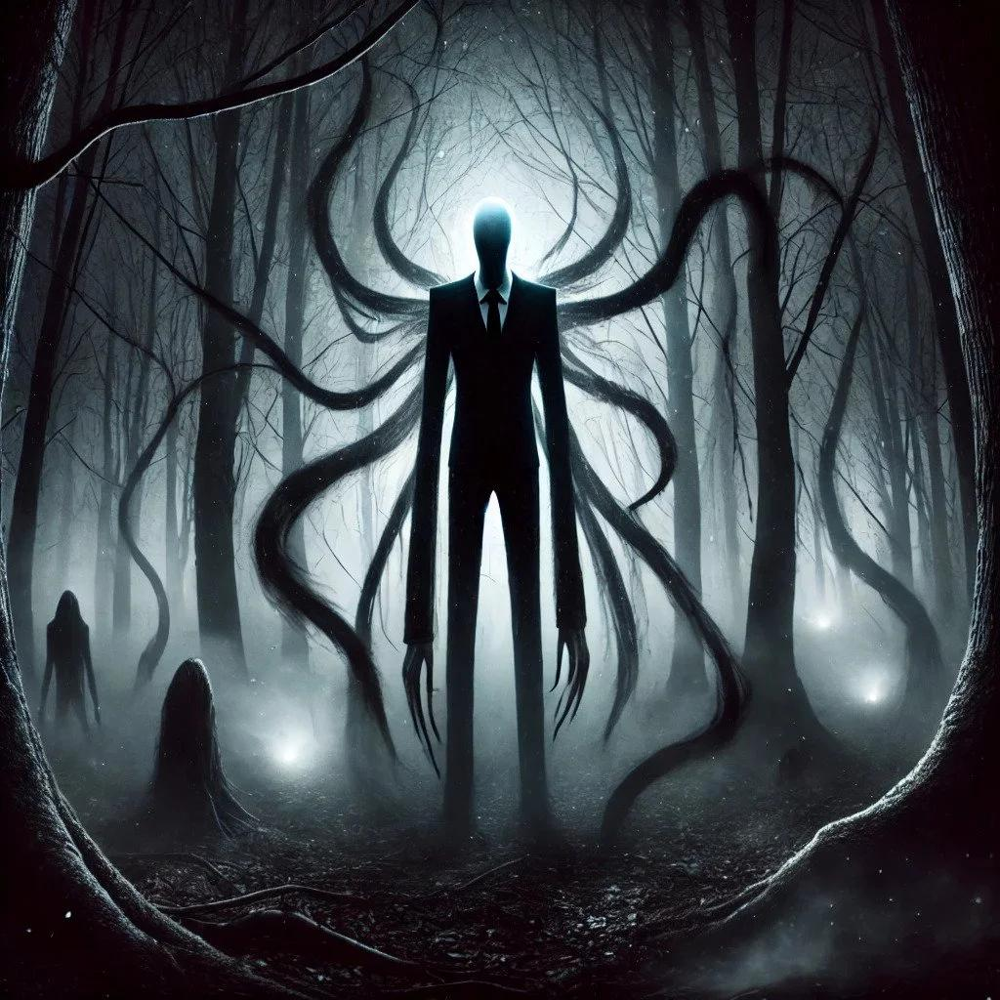
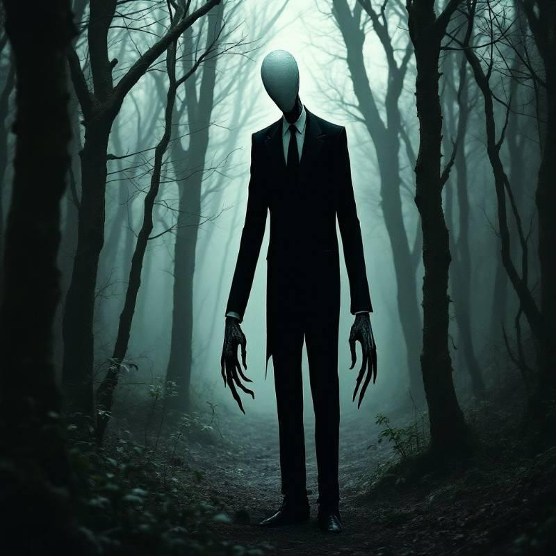
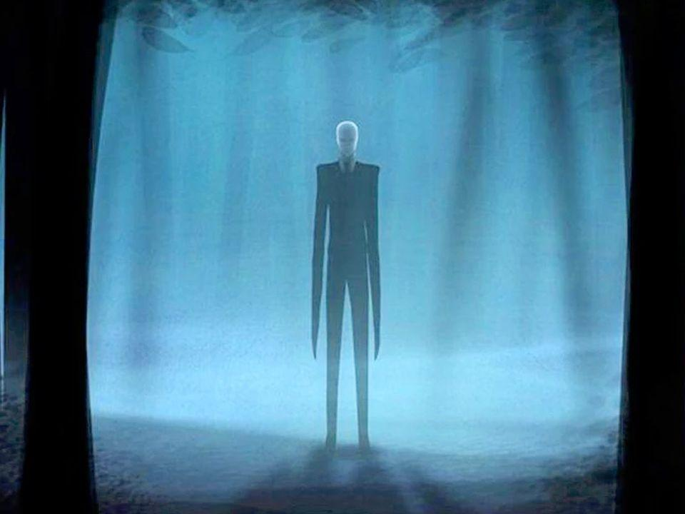
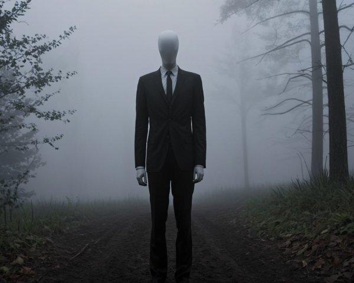

CREEPYPASTA
SLENDERMAN
Slenderman é uma figura fictícia de terror conhecida por sua altura anormal, corpo extremamente magro e rosto sem olhos, nariz ou boca. Geralmente aparece usando um terno preto e observando pessoas à distância. Criado na internet em 2009, tornou-se um dos personagens mais conhecidos das creepypastas.



O QUE ACONTECE?
Nas histórias, pessoas encontram uma figura alta e silenciosa em florestas, parques isolados e lugares abandonados. Inicialmente, ela aparece ao longe, mas parece se aproximar cada vez mais. Algumas narrativas associam sua presença a desaparecimentos, interferências em gravações e sensações de paranoia.

CARACTERÍSTICAS
play_arrow ORIGEM
Criado em 2009 por Eric Knudsen, conhecido como Victor Surge, em uma comunidade de criação de imagens de terror na internet.
person PRINCIPAL PERSONAGEM
Slenderman, uma figura humanoide misteriosa e sem rosto.
skull APARÊNCIA
Extremamente alto e magro, com braços compridos, rosto sem feições e terno preto.
warning LOCAL
Florestas densas, parques isolados e edifícios abandonados.

CURIOSIDADES
- Surgiu em imagens manipuladas publicadas na internet em 2009.
- A série de vídeos Marble Hornets ajudou a popularizar o personagem.
- Inspirou jogos, vídeos, livros e adaptações cinematográficas.
- Apesar de seu estilo documental, as histórias são fictícias.
